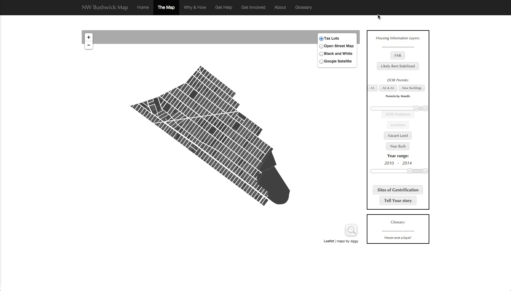
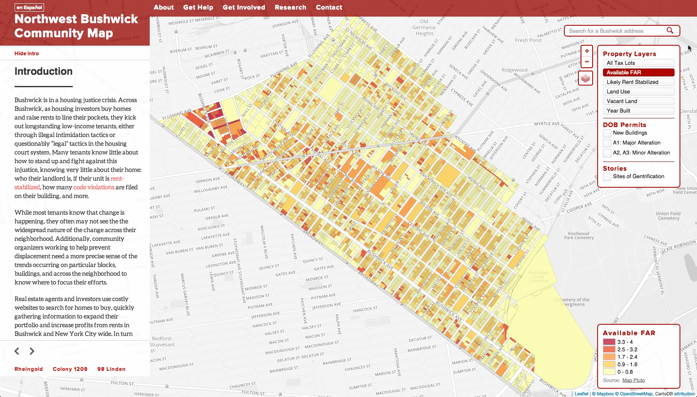
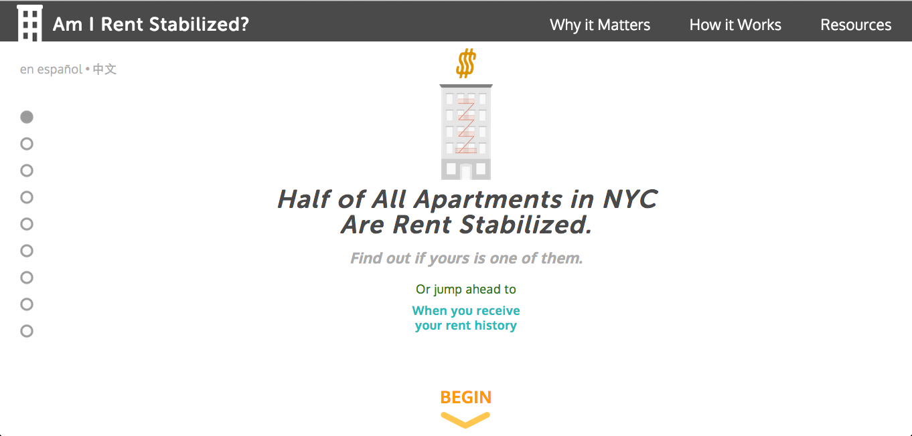
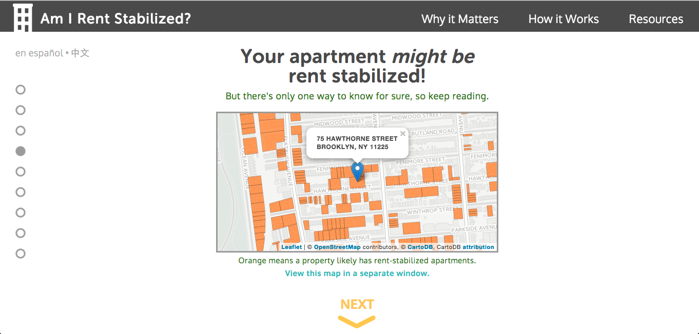
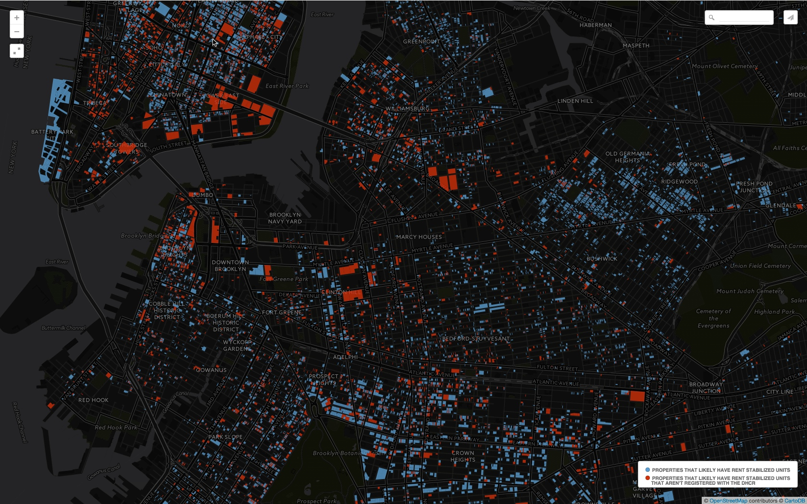
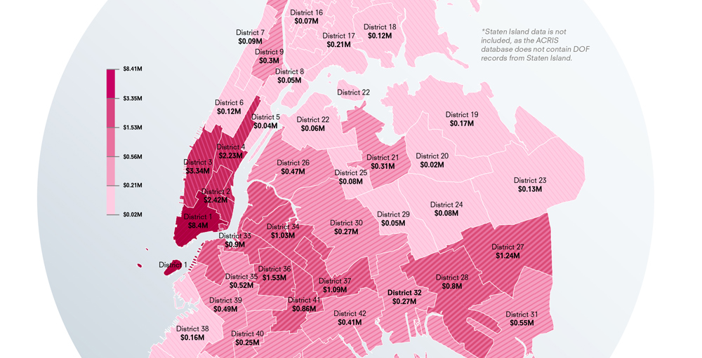

Technology
& Open Data for Housing Justice
Concept:
To use open data, technology and personal narratives to
combat the displacement of NYC residents from hypergentrification.
Problem:
Disconnect between city planners & NYC residents.
Problem:
Developers have too much political power and don't address community concerns.
Problem:
Landlords easily get away with illegal practices such as tenant harassment.
Problem:
Many tenants are not aware of their legal rights.
Projects
Goals:
Improve an existing web resource on housing data for community groups in Bushwick, BK.
before...
after...


Goals:
One: Educate tenants about their rights around rent regulation.
Goals:
Two: Motivate tenants to take action to protect themselves.
Research:There exists a discrepancy between
registered and
non-registered rent-stabilized apartments.
(map)
registered and potentially non-registered rent-stabilized apartments
A project for the
NYC Real Estate Investment Cooperative
Concept:
Proposing a one percent flip tax on new development to fund permanently affordable workplaces and housing.
Distribution of a proposed 1% tax on flips in 2014 by city council district
Methodology: Analysis of real estate transaction data from
ACRIS
Tools For Housing Justice
Concept:
An App to help NYC tenants rights organizations utilize open data
Integrate Building Indicators Project data with Civi-CRM
Goal:
Integrating qualitative & quantitative data to assist CSC.
Goal:
Case Study / User Test to see if it can be effective for tenants-rights groups elsewhere
Next Steps
Continuing:
Landscapes For Profit
&
Tools For Housing Justice
Data updates & More Features
Northwest Bushwick Community Map